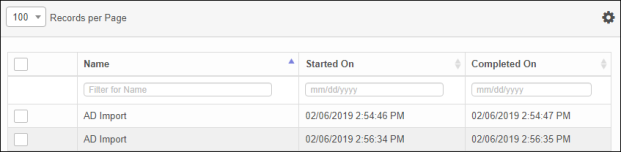
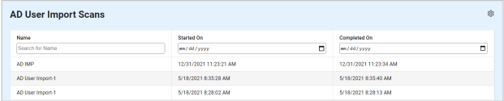

AD User Import Scans
Use this function to view scanned results and the details for imported AD Users.
| 1. | In the navigation pane, select Discovery Scan > AD User Import Scans. The AD User Import Scans window displays. |


| 2. | To view or edit the information, click on the applicable record in the list. |
| 3. | Refer to the following to manage the AD User Import Scans information: |
Other Functions and Page Elements